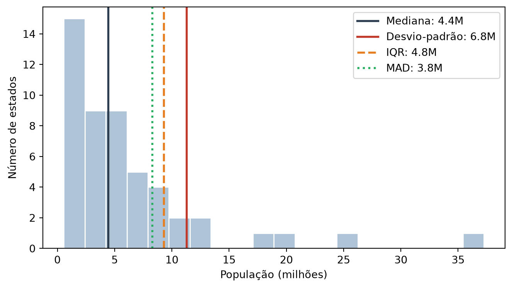

Estimativas de Variabilidade
Esta seção corresponde à seção 1.4 de Bruce et al. (2020).
A seção 1.3 resumiu a população dos estados por um valor típico — média, média aparada, mediana — e viu a média se deslocar para longe das outras duas, puxada pela cauda de estados muito populosos. Localização é só metade da história. A outra metade responde a uma pergunta diferente: quão espalhados os dados estão em torno desse valor típico? Essa é a variabilidade, ou dispersão.
Dois estados podem ter a mesma população mediana e mesmo assim serem completamente diferentes: num, quase todo mundo mora em cidades de tamanho parecido; no outro, uma metrópole convive com dezenas de municípios minúsculos. A localização não distingue esses dois casos. A dispersão, sim.
Desvio e por que não usar a média dos desvios
A forma mais direta de medir dispersão é olhar o desvio de cada observação em relação à média, \(x_i - \bar{x}\), e resumir esses desvios em um único número. O problema é que a média aritmética dos desvios é sempre zero — não importa o quão espalhados os dados estejam. Isso não é uma propriedade dos dados: é uma consequência algébrica de como a própria média é definida. Os desvios positivos e negativos cancelam exatamente.
Para obter um número útil é preciso eliminar o sinal antes de tirar a média. Há duas formas padrão de fazer isso: elevar cada desvio ao quadrado, ou tomar seu valor absoluto. A primeira leva à variância e ao desvio-padrão; a segunda, ao desvio absoluto médio.
Desvio-padrão e variância
A variância é a soma dos desvios ao quadrado dividida por \(n-1\), e o desvio-padrão é a sua raiz quadrada:
\[s = \sqrt{\frac{\sum_{i=1}^{n}(x_i - \bar{x})^2}{n-1}}\]
desvio = estado["Populacao"].std()
print(f"Desvio-padrão: {num(desvio)}")Desvio-padrão: 9.256.155,8Tirar a raiz quadrada devolve o desvio-padrão à unidade original dos dados (habitantes, no caso), enquanto a variância fica em habitantes ao quadrado — uma unidade sem interpretação direta. Isso, somado à conveniência matemática de trabalhar com quadrados, é o motivo do desvio-padrão ser a medida de dispersão mais citada. Não é porque seja a mais robusta: é o contrário. Elevar ao quadrado amplifica desvios grandes muito mais do que pequenos, então o desvio-padrão é ainda mais sensível a extremos que a própria média — e a média já não era robusta.
Estimativas robustas: IQR e MAD
Assim como a mediana substitui a média quando extremos distorcem a localização, existem substitutos robustos para o desvio-padrão.
A amplitude interquartil (IQR) é a diferença entre o 75º e o 25º percentil — a largura da metade central dos dados, ignorando completamente o que acontece nas pontas:
iqr = estado["Populacao"].quantile(0.75) - estado["Populacao"].quantile(0.25)
print(f"IQR: {num(iqr)}")IQR: 6.443.986,0O desvio absoluto mediano (MAD) segue a mesma lógica dos desvios em torno da média, mas trocando média por mediana nos dois lugares — tanto no ponto de referência quanto na forma de resumir os desvios:
\[\text{MAD} = \frac{\text{mediana}\big(|x_i - \text{mediana}(x)|\big)}{0{,}6745}\]
mad = robust.scale.mad(estado["Populacao"])
print(f"MAD: {num(mad)}")
# O mesmo cálculo, explicitamente — para mostrar de onde vem o 0,6745
mad_manual = abs(estado["Populacao"] - estado["Populacao"].median()).median() / 0.6744897501960817
print(f"MAD (manual): {num(mad_manual)}")MAD: 4.752.396,9
MAD (manual): 4.752.396,9Os dois cálculos batem exatamente: a função robust.scale.mad da statsmodels não faz nada além dessa conta. O fator 0,6745 no denominador não é arbitrário — ele calibra o MAD para que, sob uma distribuição normal, o valor resultante seja diretamente comparável ao desvio-padrão. Sem essa calibração, MAD e desvio-padrão viveriam em escalas diferentes e comparar os dois números não teria sentido.
mediana = estado["Populacao"].median()
fig, ax = plt.subplots()
ax.hist(estado["Populacao"] / 1e6, bins=20, color="#b0c4d8", edgecolor="white")
ax.axvline(mediana / 1e6, color="#2c3e50", linewidth=2, label=f"Mediana: {num(mediana/1e6, 1)}M")
for medida, valor, cor, estilo in [
("Desvio-padrão", desvio, "#c0392b", "-"),
("IQR", iqr, "#e67e22", "--"),
("MAD", mad, "#27ae60", ":"),
]:
ax.axvline((mediana + valor) / 1e6, color=cor, linestyle=estilo, linewidth=2,
label=f"{medida}: {num(valor/1e6, 1)}M")
ax.set_xlabel("População (milhões)")
ax.set_ylabel("Número de estados")
ax.legend()
plt.tight_layout()
plt.show()
O desvio-padrão (9,26M) é quase o dobro do MAD (4,75M) — a razão entre os dois é 1,95, ainda mais próxima do dobro do que costuma aparecer. Essa distância entre uma medida sensível a extremos e uma medida robusta é o mesmo sinal que a diferença entre média e mediana já tinha dado na seção 1.3: a distribuição de população dos estados tem cauda longa à direita. Quanto mais as duas famílias de estimativas — a sensível e a robusta — discordam, mais forte é o sinal de cauda longa, não um capricho do cálculo.
Mexa no desvio-padrão
Os números acima são uma fotografia de uma única distribuição. Para separar de vez o que é a média do que é o desvio-padrão, o widget abaixo faz algo que nenhum gráfico estático consegue: muda a dispersão da taxa de homicídios sem tocar na média. Arraste o controle e observe a linha vermelha — ela não se move um pixel. Média e desvio-padrão são parâmetros independentes: um descreve onde os dados estão centrados, o outro descreve quão longe eles se espalham desse centro, e mudar um não obriga o outro a mudar.
O truque por trás disso é o z-score. Cada estado tem um z-score real, \(z_i = (x_i - \bar{x}) / s\), calculado uma única vez a partir dos dados verdadeiros. Para gerar uma taxa com um desvio-padrão diferente, basta inverter a fórmula: \(x_i' = \bar{x} + z_i \times s_{\text{novo}}\). Essa não é uma aproximação — é a mesma identidade algébrica em outra direção, e ela devolve exatamente a média \(\bar{x}\) para qualquer \(s_{\text{novo}}\) que você escolher.
Repare que os dois eixos do gráfico abaixo estão travados — o eixo x sempre vai de 0 a 45, o eixo y sempre vai de 0 a 8, não importa o que o slider faça. Isso é proposital: um eixo que se reajusta automaticamente absorveria o efeito da mudança, e as barras sempre pareceriam “do mesmo tamanho” — exatamente o que este widget existe para desmentir. Com o eixo fixo, dispersão maior significa, visivelmente, barras mais espalhadas e mais baixas; dispersão menor significa barras mais estreitas e mais altas, todas se apertando contra a linha vermelha da média.
Por que o slider para em 11,8, e não continua até 15 ou 20? Não é capricho de quem construiu o widget — é uma restrição matemática. O desvio-padrão máximo que essa distribuição pode ter, mantendo a média fixa em 22,74, é
\[\sigma_{\text{crítico}} = \frac{\mu}{|z_{\min}|} = \frac{22{,}74}{1{,}926} = 11{,}81\]
onde \(z_{\min} = -1{,}926\) é o z-score de São Paulo — a menor taxa do país (6,16 por 100 mil). Acima de 11,81, a fórmula \(x_i' = \bar{x} + z_i \times s_{\text{novo}}\) empurraria a taxa de São Paulo para um valor negativo. Taxa de homicídios negativa não existe: não há como matar menos que zero pessoas a cada 100 mil habitantes. Arraste o slider até o fim e veja a menor taxa da tabela encostar em zero — é exatamente esse limite sendo alcançado.
Essa restrição não é peculiaridade da taxa de homicídios: o piso em zero limita quanta dispersão uma variável positiva pode ter, dada a sua média. Uma variável que não pode ser negativa tem, por construção, muito mais espaço para se espalhar para cima do que para baixo — o chão está sempre a uma distância finita da média, o teto não está a distância nenhuma. É por isso que renda, população e tempo de espera, entre tantas outras variáveis que só existem como números positivos, tendem a ser assimétricas à direita: a cauda longa de valores altos não tem para onde recuar, mas a variação para baixo esbarra em zero muito antes. A seção 1.5 retoma exatamente essa assimetria — e agora você já viu de onde ela nasce.
Resumo
| Medida | Valor | Robusta a extremos? |
|---|---|---|
| Desvio-padrão | 9.256.156 | Não |
| IQR | 6.443.986 | Sim |
| MAD | 4.752.397 | Sim |
Se a população de cada estado fosse multiplicada por 1.000, o desvio-padrão e o IQR também seriam multiplicados por 1.000: ambos herdam a unidade dos dados e escalam linearmente com eles. A variância, por estar em unidade ao quadrado, seria multiplicada por 1.000.000. É exatamente esse descasamento de unidade que faz o desvio-padrão, e não a variância, ser reportado na prática.
Exercícios
1. Por que não se usa simplesmente a média dos desvios em relação à média como medida de dispersão?
Porque ela é sempre exatamente zero — é uma propriedade algébrica da média, não um fato sobre os dados. Os desvios positivos cancelam os negativos por construção. Daí a necessidade de eliminar o sinal, elevando ao quadrado (variância, desvio-padrão) ou tomando o módulo (desvio absoluto médio, MAD).
2. O desvio-padrão da população dos estados é 9,26M e o MAD é 4,75M — quase o dobro. O que essa razão diz sobre os dados?
Que há observações extremas puxando o desvio-padrão para cima. Sob uma distribuição normal, MAD e desvio-padrão seriam próximos — é para isso que serve o fator 0,6745 na fórmula do MAD. Uma razão desvio-padrão/MAD muito maior que 1 é um diagnóstico prático de cauda longa ou outliers, tal como a distância entre média e mediana foi na seção 1.3.
3. Se você multiplicar todas as populações por 1.000, o que acontece com o desvio-padrão? E com o IQR?
Ambos são multiplicados por 1.000. As medidas de dispersão têm a mesma unidade dos dados e escalam linearmente com eles. A variância, ao contrário, seria multiplicada por 1.000.000 — ela está em unidade ao quadrado, o que é justamente o inconveniente que motiva o uso do desvio-padrão no lugar dela.